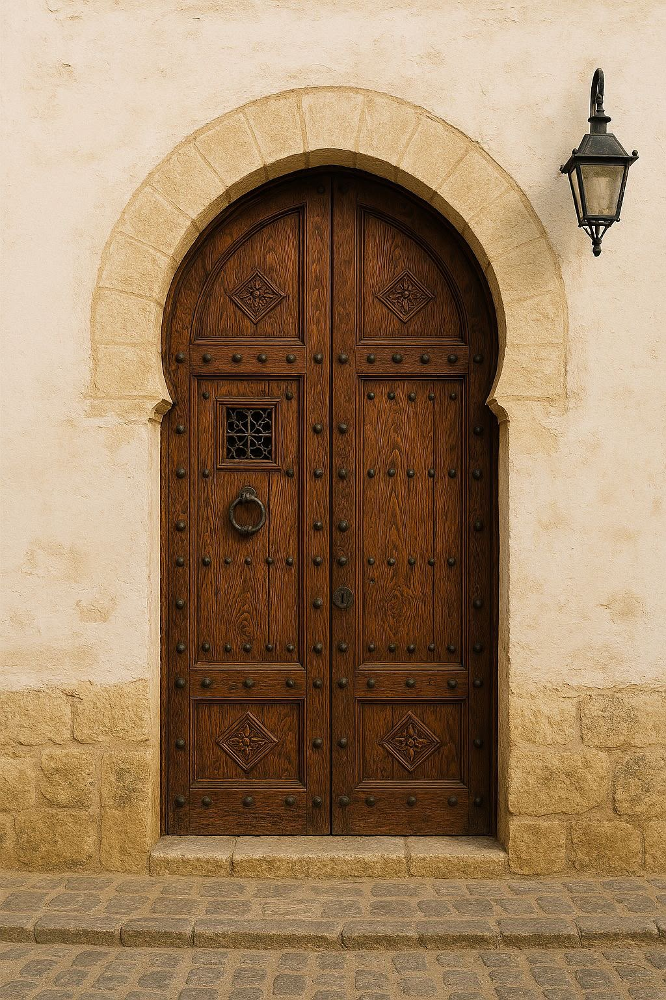
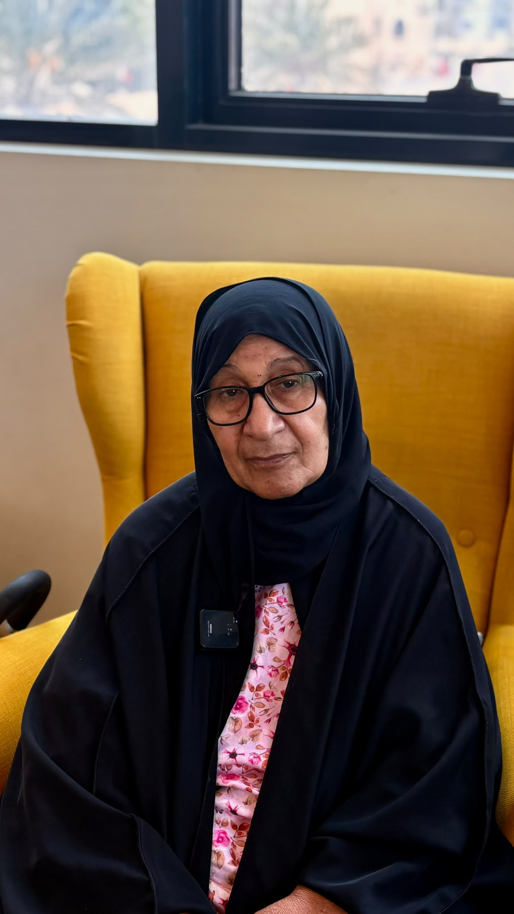
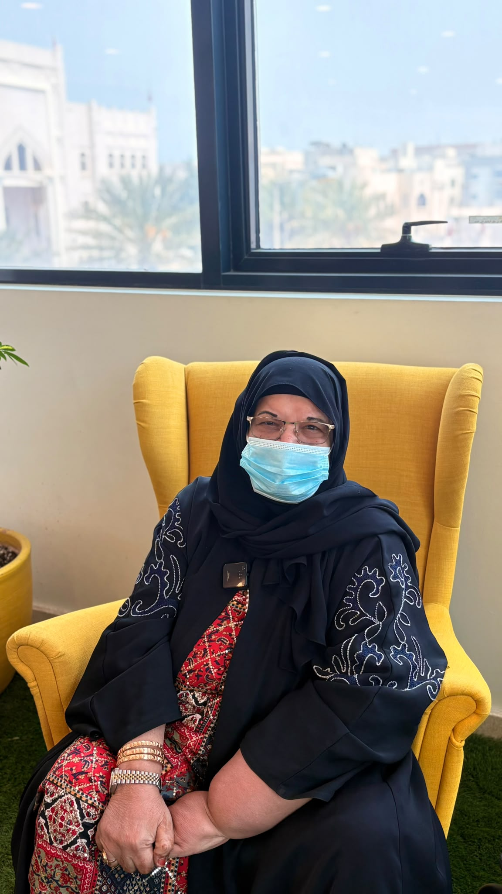

رُواةُ الدَّار
«كان يا ما كان في البحرين»
أرشيفٌ من الحكايات والذكريات البحرينية
✦ ━━━━ ✦
ابدأ الحكاية ✦

«كان يا ما كان في البحرين»
أرشيفٌ من الحكايات والذكريات البحرينية

أن لا تنطفئ الحكاياتُ برحيلِ رُواتها، بل تبقى إرثًا حيًّا يسكن القلوب، تتناقله الأجيالُ كما تتوارثُ النخيلُ ثمرَها، لتظلَّ «رُواةُ الدار» حارسةً لذاكرة الوطن، وصوتًا لماضٍ يستحق أن يُروى.
نؤمن بأن لكلِّ حكايةٍ روحًا تستحقُّ الخلود، ولكلِّ راوٍ أثرًا لا ينبغي أن يُنسى، لذا نسعى إلى جمع روايات كبار السن، وحفظها، ونقلها بأمانةٍ إلى الأجيال، لتظلَّ ذاكرة الوطن نابضةً بالحياة.
قامت مبادرة «رُواةُ الدار» على إحياء ذاكرة الوطن عبر توثيق الحكايات الشفهية لكبار السن، حيث جُمعت رواياتهم وسُجِّلت، ثم أُعيدت صياغتها بلغةٍ قريبة من جيل الشباب دون المساس بروحها الأصيلة. ولم تقتصر المبادرة على التوثيق، بل امتد أثرها إلى تحويل تلك الحكايات إلى حلقاتٍ مرئية ومحتوى رقمي، مع أرشفتها في مكتبةٍ رقمية تحفظها من الاندثار، لتظل ذاكرة الوطن حيّةً ومتداولة بين الأجيال.

مشرفة شؤون إدارية و مالية متقاعدة
📍 المحرق

راوية للتراث الشفهي
📍 قلالي
شاركونا انطباعكم عن «رُواةُ الدار»، ولتكن كلمتكم جزءًا من حكايتنا.
امسح الرمز عبر كاميرا هاتفك للمشاركة
تم إنجاز هذا المشروع بجهد الطالبة
مدرسة الاستقلال الثانوية للبنات
✦